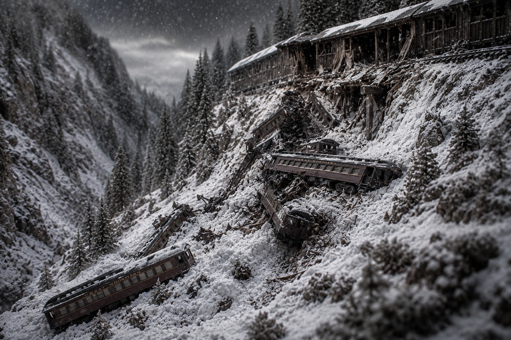

White Death at Wellington: America's Deadliest Avalanche

The lightning crackled through the darkness at 1:42 a.m. on March 1, 1910, illuminating a hellish scene high in Washington's Cascade Mountains. For nine days, passengers and crew aboard two Great Northern Railway trains had been trapped at Wellington depot, buried under relentless blizzards that dropped up to a foot of snow every hour. They had survived the impossible storm. But in the seconds after that fateful lightning strike, a ten-foot wall of snow—half a mile long and a quarter-mile wide—broke loose from Windy Mountain's flank and roared toward the tiny railroad town. Within moments, 96 souls would perish in what remains America's deadliest avalanche disaster, a tragedy that would haunt the mountain pass for generations and force the railroad industry to fundamentally rethink mountain operations.
The Nine Days of Hell
The ordeal began innocuously enough in late February 1910, when two trains—the Seattle Express passenger train and a mail train—departed Spokane bound for Seattle. Both were operating on the Great Northern Railway's mountain crossing through Stevens Pass, considered an engineering marvel of its era. But Mother Nature had other plans.
By February 23, an unprecedented blizzard had engulfed the Cascade Range. At Wellington, a small unincorporated community that served as the western portal of the original Cascade Tunnel, conditions deteriorated rapidly. The snow fell with terrifying intensity—on the worst day, eleven feet accumulated in just 24 hours. Snow plows dispatched to clear the line found themselves as helpless as the stranded trains, unable to penetrate the massive accumulations between Scenic and Leavenworth.
The 150 passengers and crew settled into an uncomfortable vigil, sleeping aboard their trains while railroad workers and townspeople tried desperately to dig them out. Fresh rotary plows arrived but made little headway against the relentless snow and repeated small avalanches that swept the mountainside. The passengers, initially optimistic, grew increasingly anxious as days stretched into a week, then longer. Some considered abandoning the trains to hike down the mountain, but railroad officials discouraged such dangerous attempts.
The Lightning Strike
On February 28, the snow finally stopped. Rain began to fall, accompanied by unusually warm winds—a dangerous weather shift that experienced mountain men recognized as avalanche conditions. A recent forest fire had stripped Windy Mountain's slopes of the trees that might have anchored the snowpack, leaving nothing to impede a slide.
"Just after 1 a.m. on March 1, during a freak thunderstorm, a bolt of lightning struck the mountainside above Wellington. The impact was catastrophic."
A massive slab of snow broke free and began its deadly descent. Most passengers and crew were asleep in their cars, seeking what rest they could after nine days of confinement. The avalanche hit with the force of a freight train. The impact threw both trains 150 feet downhill and into the Tye River valley below. Cars telescoped and splintered. The sound was heard miles away—witnesses described it as thunder that wouldn't stop.
Railroad employees who had been staying in the nearby Bailets Hotel rushed to the wreckage immediately, working frantically in the continuing storm to pull survivors from the twisted metal and snow. Twenty-three people emerged alive from the devastation. Ninety-six did not. The dead included 35 passengers, 58 Great Northern employees who had been aboard the trains, and three railroad workers in the depot building. The work of recovering bodies proved so difficult—hampered by adverse weather and the depth of the burial—that the last victim wasn't retrieved until late July, 21 weeks after the disaster.
Aftermath and Legacy
The Great Northern Railway moved swiftly to distance itself from the tragedy. In October 1910, Wellington was quietly renamed "Tye," hoping to erase the unpleasant associations of the old name. The railroad also began constructing massive concrete snow sheds to shelter vulnerable track sections—a technological solution to what had been revealed as a fatal vulnerability in mountain railroading.
The depot at Wellington/Tye closed in 1929 when the Great Northern completed the new 7.8-mile Cascade Tunnel, which bypassed the avalanche-prone surface route entirely. The abandoned town eventually burned, leaving only traces of its brief, tragic existence.
Today, the old track bed and some of the concrete snow sheds remain preserved as part of the Iron Goat Trail, a hiking path accessible from U.S. Highway 2 near Stevens Pass. Visitors can walk the route where those trains once stood, contemplating how far American railroading has come since that terrible night when the white death descended from Windy Mountain.
"The Wellington disaster stands as a stark reminder that conquering nature's obstacles requires more than engineering ambition—it demands respect for the awesome power of the mountains themselves."
Reflection
The Wellington avalanche wasn't merely a natural disaster—it was a turning point in railroad safety practices. It prompted the development of avalanche forecasting, snow-shed construction, and ultimately the decision to bore longer tunnels through mountains rather than traverse their dangerous surfaces. In the years following 1910, not a single passenger would die from an avalanche on this route again.
Yet the tragedy also reminds us of a darker truth: progress often comes at terrible cost, and the immigrant workers and ordinary travelers who built and used America's railroads sometimes paid with their lives for the convenience we enjoy today. The Wellington avalanche remains the deadliest in American history not because we've conquered avalanches, but because we learned—through sorrow—to avoid them.
Sources & Further Reading:
- HistoryLink.org - The Free Online Encyclopedia of Washington State History
- Wikipedia: Wellington, Washington - Comprehensive article on the 1910 avalanche
- Seattle Times - "1910 Stevens Pass avalanche still deadliest in U.S. history"
- Iron Goat Trail - Visit the historic site today